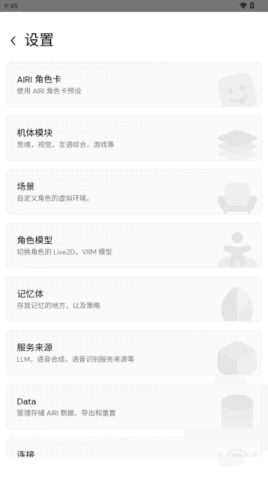
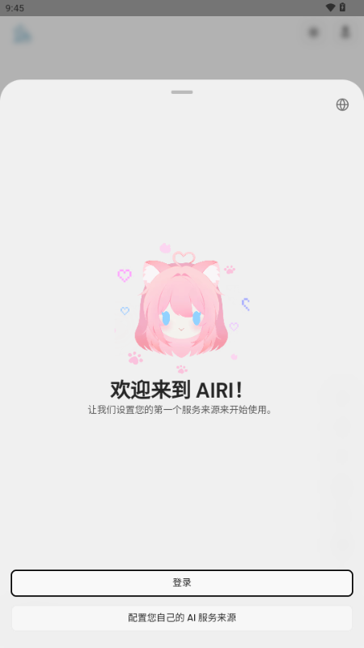

把 AIRI 嵌进晨间信息流：从刷资讯到归档一条链
每天早上醒来看一圈公众号和技术博客，以前要手动复制粘贴到笔记再整理，现在让 AIRI 常驻桌面当信息整理员，语音说一声就把碎片化内容拼成结构化摘要，晚上复盘也一并收了。
我每天早上六点半有一件固定的事：刷一圈信息源——三个微信公众号、两个技术博客、一个知乎专栏。以前这条链要五步：打开文章 → 看到好段落 → 选中复制 → 切到印象笔记 → 粘贴加标签 → 下一篇再来一遍。二十分钟的阅读，半小时在做搬运，还经常因为切窗口太频繁漏了重点或者贴错位置。
后来我在AIRI官网上发现 AIRI 可以常驻桌面，就把她塞进了这条链的中间位置。现在流程变成：打开文章 → 说一句「帮我记一下今天看到的重点」 → 继续看下一篇 → 刷完后她自己拼成一份结构化摘要放进飞书文档里。少了两次手动复制的环节，也省了事后翻笔记找东西的时间。
旧流程卡在哪
先说说以前那套为什么不行。核心问题不是复制粘贴本身花了多久，而是注意力被切碎了。每切一次窗口，我都要重新定位「刚才读到哪了、这段要不要记」。刷二十篇文章等于切了四十次窗口，每一次都是一次心智跳转。
另一个问题是碎片化堆积。印象笔记里存了一堆散段落，到周末想整理成知识卡片的时候，翻起来头都大——这段是哪篇来着？那个链接还能不能打开？整理本身又变成了另一件事，一拖就是半年。
新流程怎么把 AIRI 插进去
整套流程的关键是三个衔接点：桌面版常驻（不挡活）、官方提供商做快速对话、飞书文档做最终归档。
第一个环节，让 AIRI 不碍眼。桌面版从官方下载装完默认是「总是显示」模式，形象飘在最上层，刚开始我每次都要点窗口最小化把她挪开，后来才发现展开菜单里的「悬停时隐藏」是真的有用——鼠标移到她身上时窗口主动让路，工作区域完全不被遮挡，需要说话的时候直接点托盘菜单或者主窗口的聊天按钮就行。半高模式也开了，存在感缩到最低，但一抬头还能看见。

第二个环节，模型来源选官方提供商。一开始我折腾了三天国产模型的 API 配置，后来发现对我这种日常资讯整理的场景，官方提供商给的 150 电量够用好一阵子——资讯摘要不是复杂推理任务，不用大模型，也不用长上下文。登录用邮箱就行，Google 和 GitHub 在国内网络环境下确实登不上，邮箱最省心。电量快用完的时候再考虑换自己的服务来源，两条路线的切换在设置里点几下就完成。
第三个环节，归档出口选飞书文档。AIRI 本身不直接写飞书，但她的对话可以导出成 Markdown。我在流程末尾加了一步：让她把今天整理的内容按固定格式输出，然后粘进飞书文档的对应章节。如果后面想自动化这一步，用飞书开放平台的 API 接一下就行，目前手动粘一下也不费事，因为她给的格式已经是整理好的，不是散文本。
完整流程现在是这样：
6:30 - 6:50 刷资讯源，看到值得记的就对 AIRI 说一句（或者把文字拖进聊天框）6:50 - 6:55 说「帮我拼成一份今天的信息摘要，分三类：行业动态、技术笔记、值得关注的产品」6:55 - 7:00 AIRI 输出结构化内容，粘进飞书文档的「每日观察」章节
实操里两个容易断链的地方
第一个坑是语音识别的收音质量。主窗口上的听力控制按钮点开后要选对麦克风设备，我的电脑默认选了个耳麦但其实效果很差，识别出来的内容错字一堆，还得手动改。改成笔记本自带麦克风反而效果好。另外有个细节：她说话的时候会暂停收音，防止自问自答，这个默认行为我一开始以为是 bug，还去重启了应用。
第二个坑是电量耗尽后的衔接。官方提供商的电量用完后对话会卡住，我遇到过一次是在正在整理重点的时候，卡住了五六分钟才反应过来是电量问题。现在的做法是：每天早上开始前先看一眼托盘菜单里的电量显示，低于 20 就先去网页版充一下值——桌面版不能直接充值，得切到网页版的 Flux 设置里操作，这一点AIRI文档里写得很清楚，但第一次确实没注意到。

这套流程什么时候划算
对每天固定要刷信息源的人来说，省掉两次手动复制的环节是看得见的。以前二十分钟阅读要半小时搬运，现在搬运环节压缩到五分钟以内——少了的二十分钟用来多看一篇长文或者早点开写。
但也有两个边界场景。一是资讯量暴增的时候，比如产品发布会当天或者行业大会期间，官方提供商的速度会变慢，而且 150 电量不够用，这时候得提前切换到自备模型。二是如果你的信息源完全不固定，今天看 A 明天看 B，没有规律，那这套流程的价值就要打折扣——AIRI 的整理效果建立在你给她的输入本身有脉络的基础上。
我自己用了三个月，最明显的变化是飞书文档里「每日观察」的章节从以前断断续续只记了一半，变成每天都有完整的一条。周末想回溯某一周看到了什么，直接翻文档就行，不用再去印象笔记里翻一堆散段落拼凑。这才是真正省时间的地方——不是当下省了几分钟，而是事后找东西的时候不用翻旧账。这套资料我在GitHub、Gitee和GitCode都做了备份，方便不同网络环境下取阅。